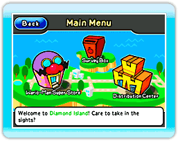
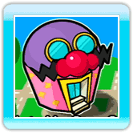

À l'écran titre, pointez la manette Wii Remote vers l'écran et appuyez sur  pour passer au menu principal.
pour passer au menu principal.
● Écran du menu principal
Le menu principal est composé de trois édifices. Placez le curseur sur un édifice et appuyez sur pour y accéder.
·Wario-Man Super Store (grand magasin Wario-Man)
Dans le Wario-Man Super Store, vous pouvez choisir parmi les sections Games (jeux), Music (musique) ou Comics (bandes dessinées). Amusez-vous avec tous les jeux, les disques et les BD qu’elles contiennent!
 ·Distribution Center (centre de distribution)
·Distribution Center (centre de distribution)
Il existe trois façons d'échanger des produits dans le Distribution Center. Consultez les détails de chacune de ces méthodes aux pages 13-15.
Notes : -Lorsque vous visitez le Distribution Center pour la première fois, vous pouvez activer (ON) ou désactiver (OFF) le D.I.Y. Friend Notification Switch (fonction de notification des amis D.I.Y.). Consultez la page 15 pour en savoir plus sur cette fonction.
-L'icône  apparaît à l'écran lorsque de nouveaux produits sont disponibles dans le Distribution Center.
apparaît à l'écran lorsque de nouveaux produits sont disponibles dans le Distribution Center.
 ·Survey Box (boîte de commentaires)
·Survey Box (boîte de commentaires)
Si vous envoyez un produit à un D.I.Y. Friend (ami D.I.Y.) via le Distribution Center, cet ami peut remplir un formulaire de commentaire concernant ce produit. Vous trouverez ce formulaire dans la Survey Box. Sélectionnez simplement le commentaire que vous souhaitez lire dans la liste affichée à l’écran.
Note : L’icône apparaît lorsque vous avez reçu un nouveau commentaire dans la Survey Box.